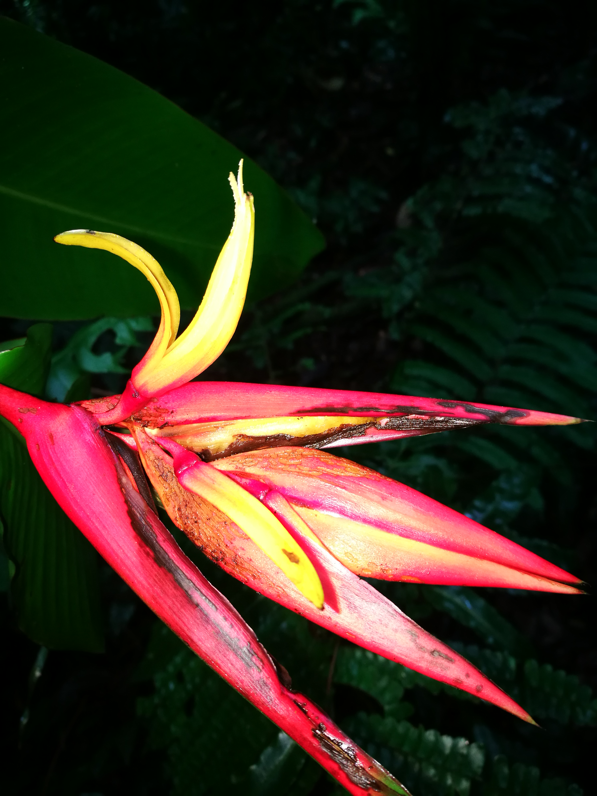
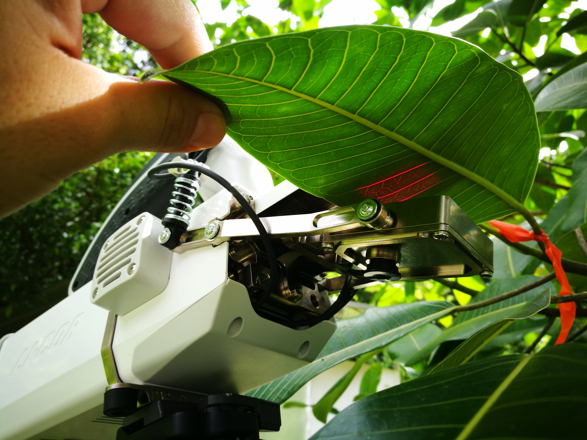

Research
Keeping up with the heat: Evaluating plants ability to acclimate to local temperatures using a long-term survey of heat tolerance in a tropical plant community
Plant populations are already facing increasing temperatures, and must adapt or migrate to avoid local extinctions. Long-term temperature records show that global warming is already affecting tropical biomes such as the wet forest at La Selva Biological Station located in the Caribbean lowlands of Costa Rica, Central America.
In this project, I will determine if Zingiberales species can acclimate to local air temperatures and modify their specific heat tolerance over the years.

Evolutionary history constrains heat tolerance of native and exotic tropical Zingiberales
We determine the highest temperature at which photosynthesis declines in the Zingiberales community of La Selva Biological Station, a Caribbean lowland forest in Costa Rica. Our results show that traits from common ancestors strongly affect the temperature at which photosynthesis declines. A surprising result was that the effect of temperature on photosynthesis was not associated with plants in a particular habitat. Biodiversity loss by climate change might not be randomly distributed across the phylogenetic tree. The consequence of such differences for survival and fitness remain unknown, but might determine which species will tolerate future temperatures in a warming world.

Similar temperature dependence of photosynthetic parameters in sun and shade leaves of three tropical tree species
To provide accurate input to models, the temperature sensitivity of net photosynthesis, we first need to understand the differences on photosynthetic biochemistry and stomatal conductance imposed by the canopy vertical gradient. Together these results provide justification for the use of the same temperature response parameters for all layers in the canopy (sun and shade leaves).
